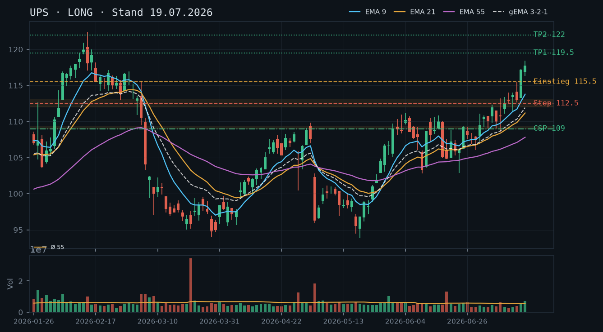
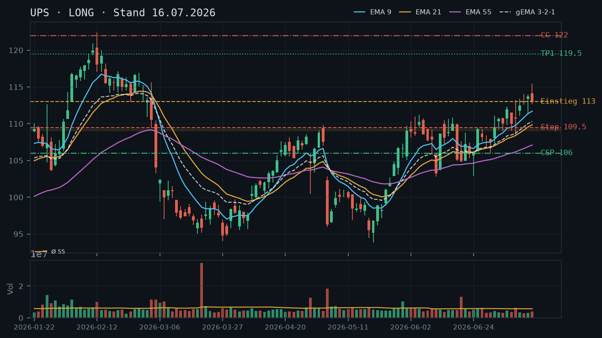
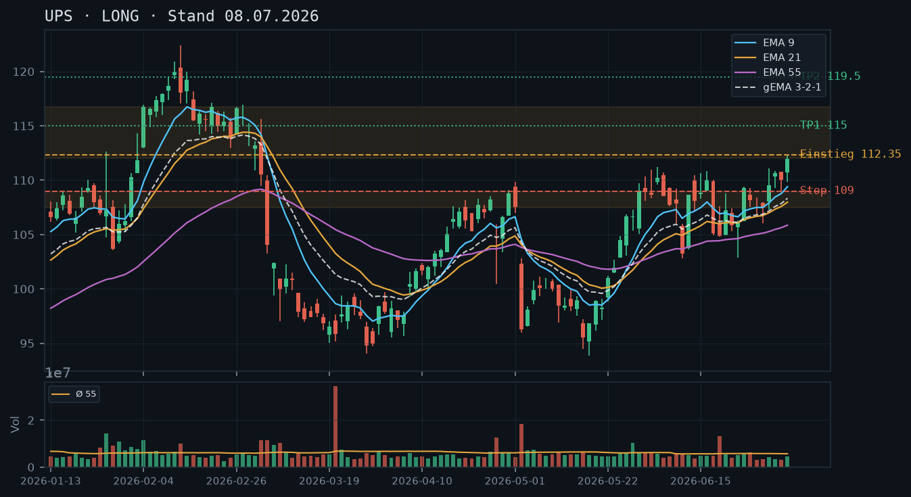

UPS
Analyse-Historie · neueste zuerstUPS konsolidiert nach dem Momentum-Hoch vom 17.07. bei 118,42 konstruktiv zwischen 113–117, die EMA-Struktur ist bullisch intakt – ein gesunder Pullback ohne Trendbruch, der frische Stillhalter-Einstiege auf tiefem Niveau ermöglicht.

1 · Trendstruktur
Der mittelfristige Aufwärtstrend, der seit Anfang Juni aus dem Bereich 103–105 gestartet ist, bleibt strukturell intakt. Die Reihe steigender Hochs (109,02 → 110,95 → 117,32 → 118,42) und steigender Tiefs (104,86 → 106,87 → 109,03 → 112,62 → 113,37) ist ungebrochen. Das Hoch vom 17.07. bei 118,42 markiert den aktuellen Verlaufshöchststand; der anschließende Rücksetzer auf 113,15 (20.07.) wurde bereits wieder als Kaufgelegenheit genutzt (Erholung auf 116,34 am 21.07.). Der Schlusskurs vom 22.07. bei 115,84 zeigt eine laufende Konsolidierung unterhalb des Hochs – keine Distribution, kein Trendbruch.
2 · Candlestick-Formationen
Die letzte Kerze (22.07.) ist eine enge Inside-Day-artige Kerze (116,60 Open, Hoch 117,58, Tief 115,81, Schluss 115,84) mit rel. Volumen 0,58 – deutlich unterdurchschnittliches Handelsvolumen, kein Verkaufsdruck. Die Kerze vom 20.07. (Hoch 118,08, Schluss 113,15, rel. Volumen 1,37) war eine Bearish-Reversal-Kerze mit erhöhtem Volumen, die den Rücksetzer auslöste – dieser wurde jedoch rasch aufgefangen. Die Abfolge 20./21./22.07. zeigt klassisches Bull-Flag-Muster: scharfer Rücksetzer, Erholung, enge Konsolidierung bei niedrigem Volumen.
3 · EMA-Lage (9 / 21 / 55)
Die EMA-Struktur ist klar bullisch und geordnet: EMA9 (114,52) > EMA21 (112,18) > EMA55 (108,58), gema_321 bei 112,75 – alle aufsteigend, keine Kompressions-Artefakte. Der Kurs (115,84) liegt oberhalb aller drei EMAs und oberhalb des gewichteten Verbunds. Der EMA9 bietet bei ~114,50 die erste dynamische Unterstützung, der EMA21 bei ~112,20 die zweite. Seit dem Ausbruch über 112 Anfang Juli hat der Kurs den EMA9 nie nachhaltig unterschritten – ein Zeichen für intaktes Momentum.
4 · Trade-Setup
| Richtung | Long |
| Einstieg | 115,00–115,50 (Pullback-Kauf in den Konsolidierungsbereich, idealerweise mit Stabilisierungskerze als Trigger) |
| Stop | 112,00 (unter EMA21 bei 112,18 und der Konsolidierungszone 112–113) |
| Ziel | 119,50 (unverändertes technisches Ziel aus den Vorgängeranalysen, bestätigt) |
| CRV | 1.9 : 1 (Einstieg 115,25, Stop 112,00, Ziel 119,50) |
5 · Stillhalter (max. 12 Tage)
Ein Cash-Secured Put auf die technisch gut unterstützte Zone um 109–110 bietet trotz des erhöhten Kursniveaus einen soliden Puffer. Ein Covered Call entfällt mangels Aktienbestand (IBKR-Snapshot bestätigt 0 Stück); ein Naked Call gegen den intakten Aufwärtstrend wäre strukturell kontraproduktiv und wird nicht empfohlen. KRITISCH: Earnings am 28.07. erzwingen einen Verfall spätestens am 25.07. – kein Übernacht-Risiko über die Zahlen.
| Geschäft | Cash-Secured Put |
| Strike | 110.0 |
| Puffer | 5.0 % |
| Zone | unter der mehrfach bestätigten Zone 109,03–110,02 (Tiefs vom 06./08.07., Hochs früher Juli) und klar über EMA21 (112,18) als zweite Auffanglinie |
| Verfall bis | 2026-07-25 (2 Tage, zwingend vor Q2-Earnings am 28.07.) |
| Begründung | Der 110er-Strike liegt knapp unterhalb der Zone 109,03–110,02, die im frühen Juli mehrfach als Unterstützung und Widerstand fungierte und damit als konfluente Zone gilt. Der Puffer zum aktuellen Kurs (115,815) beträgt ~5,0%. Eine Andienung bei 110,00 entspräche einem Einstieg leicht unter dem EMA21-Niveau von Ende Juli und wäre im Kontext des intakten Aufwärtstrends strukturell vertretbar. Zu beachten: Der sehr kurze Verfall (Fr. 25.07.) reduziert die erzielbare Prämie erheblich – in der Optionskette ist zu prüfen, ob die Prämie den 5%-Puffer bei nur noch 2 DTE rechtfertigt. Angesichts erhöhter IV vor Earnings könnte die Prämie dennoch interessant sein. Delta sollte idealerweise im Bereich -0,10 bis -0,20 liegen. Liquidität am 110er Strike prüfen (Round-Number-Effekt begünstigt Open Interest). |
Bestand: Laut IBKR-Snapshot vom 23.07.2026 (11:37 Uhr) bestehen in UPS weder Aktien- noch Optionspositionen. Kein Rollbedarf, kein Bestandsmanagement erforderlich.
Ausführliche Analyse vom 23.07.2026 anzeigen
UPS – Detailanalyse vom 23.07.2026
Abgleich mit den Vorgängeranalysen
Die Analyse-Kette seit 08.07. wird durch die aktuellen Kursdaten vollständig bestätigt:
- Long-Trigger 08.07. (112,35): Am 09.07. ausgelöst (Schluss 110,74 – Strike knapp verfehlt), am 10.07. dann klar über 112 (Schluss 112,47). Vollständig bestätigt.
- Kursziel 119,50: Noch nicht erreicht. Das Verlaufshoch liegt bei 118,42 (17.07.) – 1,1% vom Ziel entfernt. Die These bleibt aktiv.
- CSP 109er (19.07.-Analyse): Der 25.07.-Verfall liegt morgen. Falls dieser Put noch offen wäre, läge er mit Schluss 115,84 weit aus dem Geld – komfortabler Gewinn. Laut IBKR-Snapshot existiert keine solche Position.
- Earnings-Warnung: Alle Vorgängeranalysen haben Verfälle vor dem 28.07. gefordert – dieser Hinweis ist weiterhin zwingend gültig.
1. Trendstruktur
UPS befindet sich seit dem Tief Mitte Juni (104,82 am 18.06., rel. Volumen 2,30 – erhöhter Abgabedruck, der jedoch eine Umkehr einleitete) in einem sauberen Aufwärtskanal. Die relevanten Strukturpunkte:
- Tiefs (aufsteigend): 104,82 (18.06.) → 106,87 (30.06.) → 109,03 (08.07.) → 112,62 (16.07.) → 113,15 (20.07.)
- Hochs (aufsteigend): 109,72 (01.06.) → 111,22 (04.06.) → 117,32 (16.07.) → 118,42 (17.07.)
- Erstes Widerstandsniveau: 117,32–118,42 (Hochs 16./17.07.) – unbestätigter Bereich, da erst zweifach getestet.
- Nächstes technisches Kursziel: 119,50 – Zone aus frühem 2026, aus den Vorgängeranalysen übernommen und strukturell weiterhin gültig.
- Kritische Unterstützung: 113,00–113,37 (Tiefs 16./20./21.07.) – dreifach getesteter Bereich, gilt als bestätigte Support-Zone.
2. Candlestick-Formationen
Die letzten drei Kerzen zeichnen ein klassisches Bull-Flag-Muster nach dem Impuls vom 16./17.07.:
- 20.07. (Flaggenstab-Rücksetzer): Bearish Day, Hoch 118,08 → Schluss 113,15, Volumen 1,37x Schnitt. Erhöhtes Volumen beim Rücksetzer ist zwar ein leicht bärisches Signal, wird aber durch die rasche Erholung entkräftet.
- 21.07. (Erholung): Bullische Kerze, Tief 113,37 → Schluss 116,34, Volumen 0,78x – Erholung ohne breite Beteiligung, was für Abwesenheit von Angebotsüberhang spricht.
- 22.07. (Inside-Day): Enge Spanne 115,81–117,58, Schluss 115,84, Volumen 0,58x – klassische Kompressionskerze vor Bewegung. Auflösung nach oben würde das Bull-Flag komplettieren; Zielprojektion des Flaggenmastes (~5,50 Punkte) zeigt auf 119–120.
3. EMA-Verbund und Volumen
Der EMA-Verbund ist in einer lehrbuchhaften bullischen Konfiguration: EMA9 (114,52) > EMA21 (112,18) > EMA55 (108,58), gema_321 = 112,75, alle Linien steigend. Der Kurs notiert ~1,3 Punkte über dem EMA9 – moderater Abstand, keine Überhitzung. Vergleich zur 19.07.-Analyse: EMA9 von 113,78 auf 114,52 (+0,74), EMA21 von 111,18 auf 112,18 (+1,00), EMA55 von 107,82 auf 108,58 (+0,76) – alle EMAs ziehen konsistent nach. Das durchschnittliche Handelsvolumen (55er-Schnitt) liegt bei ~5,53 Mio.; die letzten drei Tage mit rel. Volumen 1,37 / 0,78 / 0,58 zeigen abnehmende Aktivität im Rücksetzer – typisches Konsolidierungsprofil.
4. Konkrete Trade-Setups (A/B/C)
Setup A (bevorzugt): Pullback-Long in Bull-Flag-Auflösung
- Einstieg: 115,00–115,50 (Rückkehr an Untergrenze der Konsolidierung oder bei Reversalkerze)
- Stop: 112,00 (unter EMA21 und dreifach bestätigter Support-Zone 113,00–113,37)
- Ziel 1: 118,42 (Verlaufshoch) – CRV 1,3 : 1 bei Einstieg 115,25
- Ziel 2: 119,50 (technisches Hauptziel) – CRV 1,9 : 1 bei Einstieg 115,25
Setup B: Breakout-Long über das Verlaufshoch
- Einstieg: 118,60 (Stop-Buy über das Hoch vom 17.07. bei 118,42 + Puffer)
- Stop: 115,50 (unter der Konsolidierung und EMA9-Nähe)
- Ziel: 123,00–124,00 (nächste historische Widerstandszone aus Q1 2026, sofern 119,50 gebrochen)
- CRV: ~1,5 : 1 – geringeres CRV bei höherem Einstieg, aber Bestätigung durch Ausbruch
Setup C (defensiv): Kein neuer Einstieg – Abwarten vor Earnings
- Mit Earnings am 28.07. ist ein aggressiver Long-Aufbau 2 Tage vorher riskant. Wer keine Position hat, kann auf die Post-Earnings-Reaktion warten. Wer bereits long ist (aus dem 08./09.07.-Setup), zieht den Stop auf 112,00 nach und lässt die Position laufen.
5. Stillhalter-Analyse (Schwerpunkt)
Positionsstatus: IBKR-Snapshot vom 23.07.2026, 11:37 Uhr: Keine Aktien (0 Stück), keine Optionspositionen. Damit entfällt Covered-Call-Möglichkeit (kein Bestand); ein Naked Call gegen den Trend wird explizit abgelehnt.
Cash-Secured Put – Strike 110,00, Verfall 25.07.2026:
Die Zonen-Herleitung erfolgt aus zwei Konfluenz-Elementen:
- Die Zone 109,03–110,02 wurde im frühen Juli mehrfach als Unterstützung (Tiefs 06.07., 08.07.) und zuvor als Widerstand getestet – klassische Polarity-Zone.
- Der EMA21 liegt aktuell bei 112,18 und der EMA55 bei 108,58 – der Strike 110,00 liegt zwischen diesen beiden dynamischen Unterstützungen, also in einem technisch gut abgepufferten Bereich.
Der Puffer beträgt 5,0% zum Kurs 115,815. Bei einer Andienung bei 110,00 würde man UPS in die mehrfach bestätigte Unterstützungszone kaufen – im Kontext des intakten Aufwärtstrends ein strukturell akzeptables Szenario.
Roll-Trigger: Falls UPS vor dem 25.07. unter 113,00 fällt (Bruch der dreifach bestätigten Support-Zone), wäre eine frühzeitige Schließung des Puts zu prüfen – nicht wegen Strike-Gefährdung, sondern wegen struktureller Verschlechterung. Bei einem Schlusskurs unter 112,00 (EMA21-Bruch) wäre das CSP zu schließen, da der Trend dann in Frage steht.
Einschränkung der 2-DTE-Prämie: Mit nur noch 2 verbleibenden Handelstagen ist die absolute Prämie des 110er CSP gering. In der Optionskette zu prüfen: Rechtfertigt die Prämie (wahrscheinlich unter 0,30–0,40 $ bei diesem Puffer und dieser kurzen Restlaufzeit) den Kapitaleinsatz? Angesichts der erhöhten impliziten Volatilität vor Earnings könnte die Prämie überraschend gut sein – der IV-Crush nach den Zahlen trifft diesen Verfall jedoch nicht mehr, was ein Vorteil ist (kein Gamma-Risiko über Earnings). Spread und Open Interest am 110er Strike (Round Number) sollten ausreichend sein.
Alternativer Ansatz Post-Earnings: Falls die Q2-Zahlen am 28.07. positiv überraschen (was die laufende bullische Trendstruktur nahelegt), bietet sich ab dem 29.07. ein frischer CSP mit längerem Laufzeitfenster (bis zu 08.08.2026) an – dann können Zonen und Strikes neu kalibriert werden, ohne das Earnings-Risiko zu tragen. Strike-Überlegung dann: 111,00–112,00 (neue Untergrenze der Post-Earnings-Konsolidierung).
UPS beschleunigt den Aufwärtstrend mit einem Ausbruch über 117 auf neuen Mehrmonatshochs – das Kursziel 119,50 aus den Vorgängeranalysen ist in Reichweite, und das Momentum rechtfertigt weiterhin eine konstruktive Haltung, allerdings mit engem Risikomanagement auf erhöhtem Kursniveau.

1 · Trendstruktur
UPS zeigt eine intakte Aufwärtstrendstruktur mit einer eindrucksvollen Sequenz steigender Hochs und Tiefs seit dem Swing-Low um 94,49 (18. Mai). Der Ausbruch am 16.07. über die kurzfristige Konsolidierung (111–113) mit einem Verlaufshoch bei 117,32 und dem Schlusskurs bei 117,18 etabliert ein neues Mehrmonatshoch. Das Kursziel 119,50 aus den beiden Vorgängeranalysen ist nun nur noch ~2% entfernt. Relevante Unterstützungszone: 112–113 (ehemalige Konsolidierungs-Range, mehrfach getestet 10.–15.07.). Darunter: 109,03–109,27 (mehrfach bestätigt Anfang Juli, bestätigte Zone). Der Trend ist klar bullisch, aber der Kurs befindet sich zunehmend im unkomfortablen "Extended"-Bereich über allen EMAs.
2 · Candlestick-Formationen
Der 17.07. (letzter Datenpunkt mit vollständiger Kerze: open 116,90, high 118,42, low 116,31, close 117,72) ist eine bullische Marubozu-nahe Kerze mit geringen Schatten – klarer Momentumstab ohne Distribution. Das rel. Volumen von 1,29 (129% des 55er-Schnitts) bestätigt institutionelles Interesse am Ausbruch. Der 16.07. (close 117,18, rel. Volumen 0,89) zeigte den initialen Ausbruch über 115,43. Zwei aufeinanderfolgende bullische Ausbruchskerzen mit erhöhtem Volumen – das ist Continuation-Momentum, kein Exhaustion-Signal. Negativ: Der IBKR-Snapshot zeigt aktuell 117,18, was einem Rückgang vom 17.07.-Hoch (118,42) entspricht – mögliche Early-Morning-Schwäche oder Konsolidierung zu beachten.
3 · EMA-Lage (9 / 21 / 55)
EMA-Verbund zeigt bullische Aufstellung: EMA9 (113,78) > EMA21 (111,18) > EMA55 (107,82), gema_321 bei 111,92 – alle steigend, klassische Bull-Stack-Konfiguration ohne Kompressions-Artefakte. Der Kurs notiert aktuell ca. 2,9% über dem EMA9 und ~8,7% über dem EMA55 – eine deutliche Überdehnung ("Extended off EMA"), die Rücksetzer wahrscheinlicher macht, den Trend aber nicht invalidiert. In den Vorgänger-Analysen war die EMA-Struktur bereits bullisch – diese Einschätzung wird klar bestätigt und hat sich weiter gefestigt.
4 · Trade-Setup
| Richtung | Long |
| Einstieg | Pullback-Kauf im Bereich 115,00–116,00 (unter dem 16.07.-Hoch, Konsolidierungsbereich nach Ausbruch) |
| Stop | 112,50 (unter der Konsolidierungszone 112–113 und EMA9-Puffer) |
| Ziel | 119,50 (unverändert aus Vorgängeranalysen, nächste Widerstandszone) |
| CRV | 1.9 : 1 (bei Einstieg 115,50, Stop 112,50, Ziel 119,50) |
5 · Stillhalter (max. 12 Tage)
Für einen Cash-Secured Put bietet die bestätigte Zone 109,03–109,27 weiterhin die strukturelle Basis – der Strike muss angesichts des nun deutlich höheren Kursniveaus (117,18) tiefer angesetzt werden, was den Puffer automatisch erhöht. Ein Covered Call scheidet aus: Laut IBKR-Snapshot besteht kein Aktienbestand (0 Stück), ein Naked Call auf einen Aufwärtstrend mit Momentum wäre strukturell kontraproduktiv und wird nicht empfohlen. Earnings am 28.07. sind der kritische Risikofaktor – der Verfall muss zwingend VOR dem 28.07. liegen.
| Geschäft | Cash-Secured Put |
| Strike | 109.0 |
| Puffer | 7.0 % |
| Zone | unter der mehrfach bestätigten Zone 109,03–109,27 (06./08.07.) und klar über EMA55 (107,82) |
| Verfall bis | 2026-07-25 (6 Tage, sicher vor den Q2-Zahlen am 28.07.) |
| Begründung | Der 109er-Strike liegt knapp unterhalb der mehrfach bestätigten Unterstützungszone (109,03–109,27 vom 06. und 08. Juli) und bietet einen Puffer von ~7,0% zum aktuellen Kurs. Eine Andienung bei 109,00 entspräche einem Rückkauf in eine technisch gut unterstützte Zone – ein Preis, der im laufenden Aufwärtstrend fundamentally attraktiv wäre. Der Strike liegt zudem klar über dem EMA55 (107,82), was eine zusätzliche dynamische Unterstützung liefert. Verfall bewusst VOR Earnings (28.07.) gewählt. Prüfen in der Optionskette: Prämie im Verhältnis zum 7,0%-Puffer (angesichts erhöhter IV vor Earnings potenziell interessant), Liquidität am 109er Strike, Delta idealerweise im Bereich -0,15 bis -0,25. |
Ausführliche Analyse vom 19.07.2026 anzeigen
UPS – Technische Analyse & Stillhalter-Setup (19.07.2026)
Abgleich mit historischen Analysen
Die Analyse vom 08.07.2026 empfahl einen Long-Einstieg per Stop-Buy bei 112,35. Dieser wurde laut der Folgeanalyse vom 16.07.2026 bereits am 09.07. ausgelöst. Das damals genannte Kursziel 119,50 ist nun nur noch ~2% entfernt (aktueller Kurs: 117,18). Die Stop-Nachziehung auf 109,50 aus der 16.07.-Analyse war korrekt. Beide Vorgängeranalysen werden vollständig bestätigt: Trendstruktur, EMA-Aufstellung und die Rolle der Zone 109,03–109,27 als struktureller Anker haben sich als valide erwiesen. Die CSP-Empfehlung bei Strike 106,00 (Verfall 24.07.) aus der 16.07.-Analyse ist planmäßig abgelaufen bzw. wertlos verfallen, da der Kurs seither gestiegen ist – ein optimales Ergebnis für den Stillhalter.
1. Trendstruktur – Detail
Der übergeordnete Aufwärtstrend seit dem Tief bei 93,86 (19. Mai) zeigt eine saubere Sequenz steigender Swings: 93,86 → 107,31 (27. Mai) → 104,80 (Rücksetzer 18. Juni) → 115,43 (15. Juli) → 118,42 (17. Juli, neues Verlaufshoch). Der kritische Rücksetzer auf 104,80 (18.06., rel. Volumen 2,30 – deutlich erhöht) wurde im Nachhinein als Selling-Climax interpretiert, da die Aufwärtsbewegung danach sofort wieder aufgenommen wurde.
Wichtige Levels (aktuell):
- 118,42: Aktuelles Verlaufshoch vom 17.07. – erster Widerstand
- 119,50: Technisches Kursziel aus Frühjahrs-Widerstandszone (mehrfach in Vorgängeranalysen genannt)
- 115,43: Vorheriges Verlaufshoch (15.07.) – nun erste Unterstützung
- 112,00–113,00: Konsolidierungszone 10.–15.07. (mehrfach getestet, bestätigt)
- 109,03–109,27: Bestätigte Support-Zone vom 06./08.07. – struktureller Anker
- 107,82: EMA55 (dynamische Unterstützung, steigend)
2. Candlestick-Analyse – Detail
Die letzten fünf Kerzen zeigen eine klassische Bullish Continuation-Struktur nach einer kurzen Konsolidierungsphase:
- 14.07.: Inside-Day-Charakter (high 114,02, low 111,34) – Konsolidierung mit niedrigem rel. Volumen (0,54x)
- 15.07.: Bearischer Schluss unter dem Tageshoch (115,43 → close 112,94) – Intraday-Reversal, aber kein Trendwechsel
- 16.07.: Ausbruchskerze über 115,43 hinaus (close 117,18, high 117,32) – rel. Volumen 0,89x, leicht unterdurchschnittlich, aber ausreichend für Ausbruchsvalidierung
- 17.07.: Starke Fortsetzungskerze (open 116,90, high 118,42, close 117,72) mit rel. Volumen 1,29x – dies ist der entscheidende Bestätigungsstab. Institutionelles Buying nach dem Ausbruch.
Der aktuelle IBKR-Snapshot zeigt 117,18 (gleich dem 16.07.-Schluss), was auf eine Konsolidierung/leichten Pullback im frühen Handel hindeutet. Dies ist kein Warnsignal, sondern potenziell die gesunde Verdauung des Ausbruchs.
3. EMA-Analyse – Detail
Die EMA-Konstellation ist eindeutig bullisch (Bull Stack): EMA9 (113,78) > EMA21 (111,18) > EMA55 (107,82), gema_321 bei 111,92. Alle drei EMAs steigen mit zunehmender Steigung. Keine Kompressions-Artefakte oder ungewöhnliche Kreuzungen. Der Abstand EMA9 zu EMA55 beträgt ca. 5,96 Punkte – so groß wie zuletzt im Juni-Hoch-Bereich.
Überdehnung ("Extended"): Kurs (117,18) liegt ~3,0% über EMA9 und ~8,7% über EMA55. Historisch führt eine Überdehnung >8% über dem EMA55 bei UPS zu Rücksetzern. Dies rechtfertigt keine Short-Position, aber erhöhte Vorsicht bei neuen Long-Direkteinstiegen ohne Pullback.
4. Trade-Setups (Alternative Szenarien)
Setup A (bevorzugt) – Pullback-Long:
- Einstieg: 115,00–116,00 (Rücktest des Ausbruchsbereichs)
- Stop: 112,50 (unter Konsolidierungszone 112–113)
- Ziel 1: 119,50 – CRV ca. 1,9:1 (bei Einstieg 115,50)
- Ziel 2: 122,00 (struktureller Bereich, falls Ausbruch über 119,50 erfolgt) – CRV ca. 2,2:1
Setup B – Momentum-Long (aggressiv):
- Einstieg: Stop-Buy über 118,42 (Ausbruch über aktuelles Verlaufshoch)
- Stop: 115,50 (unter 16.07.-Schlusskurs)
- Ziel: 122,00
- CRV: 1,2:1 – unter Mindestanforderung bei moderater Risikotoleranz, nur für aggressive Trader geeignet
Setup C – Kein Trade (konservativ):
Warten auf Rücksetzer zur 112–113er Zone (EMA9-Bereich in ca. 1–2 Wochen) für einen CRV >3:1 mit Ziel 119,50+. Diese Variante ist bei der aktuellen Überdehnung strukturell am saubersten, erfordert aber Geduld.
5. Stillhalter – Detailanalyse (Schwerpunkt)
Cash-Secured Put – Strike 109,00
Zonen-Herleitung: Die Zone 109,03–109,27 wurde am 06.07. (Tagestief 109,03) und 08.07. (Tagestief 109,03) exakt doppelt bestätigt – das ist eine klassische, zweifach validierte Unterstützungszone. Der Strike 109,00 liegt direkt unterhalb dieser Zone, d.h. die Zone fungiert als "Puffer" zwischen aktuellem Kurs und Strike. Zusätzlich liegt der steigende EMA55 bei 107,82 als dynamische zweite Verteidigungslinie darunter.
Puffer-Arithmetik: 117,18 → 109,00 = -6,99%, gerundet ~7,0%. Dieser Puffer ist angemessen für einen 6-Tage-Put vor Earnings.
Andienungsszenario: Eine Andienung bei 109,00 entspräche einem Kurs innerhalb der bestätigten Support-Zone und deutlich über dem EMA55. Im intakten Aufwärtstrend wäre das ein attraktiver Kostenbasis-Einstieg. Strukturell akzeptabel, sofern die Bereitschaft besteht, UPS-Aktien zu diesem Preis ins Depot zu nehmen.
Earnings-Risiko (kritisch): Die Q2-Zahlen von UPS sind für den 28.07.2026 erwartet. Der gewählte Verfall 25.07.2026 liegt exakt 3 Handelstage davor. Das Earnings-Event ist damit vollständig ausgeschlossen. Wichtig: Falls der Broker den 25.07. nicht als verfügbaren Verfallstermin führt (Weekly-Optionen enden i.d.R. freitags), ist zu prüfen, ob 25.07. ein Freitag ist – 25.07.2026 ist ein Samstag, daher ist der handelbare Freitagsverfall der 24.07.2026. Entsprechend sollte der tatsächliche Verfallstermin mit 24.07.2026 (5 Tage) gewählt werden.
Was in der Optionskette zu prüfen ist:
- Prämie (Mid): Angesichts erhöhter IV vor Earnings potenziell attraktiv; Zielprämie sollte mindestens 0,30–0,50 USD betragen, um den Aufwand zu rechtfertigen
- Delta: Idealerweise -0,12 bis -0,22 (entspricht ~15er OTM-Niveau)
- Liquidität: Spread sollte eng sein; Open Interest am 109er Strike prüfen
- IV-Rank: Vor Earnings typischerweise erhöht – günstig für den Verkäufer
Covered Call – nicht empfohlen
Der IBKR-Snapshot bestätigt 0 Aktien im Bestand. Ein Covered Call ist daher nicht möglich. Ein Naked Call auf einen laufenden Uptrend mit Momentum ist strukturell kontraproduktiv und wird ausdrücklich nicht empfohlen – das Risiko-Profil eines ungedeckten Calls (theoretisch unbegrenztes Verlustrisiko) passt nicht zur moderaten Risikotoleranz.
Roll-Trigger für den CSP
Ein aktives Roll oder Schließen des CSPs wäre zu prüfen, wenn: (1) UPS unter 112,00 fällt und der EMA9 bricht – Zeichen einer Trendabschwächung; (2) der Kurs sich 109,50 nähert und die Zone 109,03–109,27 im Intraday-Handel nicht mehr hält; (3) unerwartete News/Earnings-Vorabmeldungen den IV-Spike vorzeitig auslösen.
Der Long-Trigger vom 08.07. (112,35) wurde bereits am 09.07. ausgelöst und läuft seither planmäßig – neues Verlaufshoch am 15.07. bei 115,43, allerdings mit Schluss bei 112,94 nach einem Rückgang vom Tageshoch. Ziel 119,50 bleibt unverändert, rund 3,5% entfernt.

1 · Trendstruktur
Der Ausbruch aus der 08.07.-Analyse wurde bereits am 09.07. bestätigt (Hoch 113,22, über dem Trigger 112,35). Seither läuft eine kontinuierliche Aufwärtsbewegung mit steigenden Hochs (113,41 → 113,98 → 114,02 → 115,43 an den letzten vier Handelstagen). Am 15.07. gab es allerdings eine erste Verkaufsreaktion innerhalb des Tages: Vom Hoch 115,43 auf den Schlusskurs 112,94 – ein rund 2%iger Rückgang vom Tageshoch, der erste sichtbare Gegenwind seit dem Ausbruch.
2 · Candlestick-Formationen
13.07.: Schluss 112,89, moderate Fortsetzung. 14.07.: neues Hoch 114,02, Schluss 113,67 – solide Fortsetzungskerze. 15.07.: Hoch 115,43, aber Schluss nur bei 112,94 – ein Docht mit oberem Schatten, der auf erste Gewinnmitnahmen nahe dem bisherigen Hoch hindeutet, ohne den Aufwärtstrend zu brechen.
3 · EMA-Lage (9 / 21 / 55)
Klare bullische Fächerordnung: EMA9 (111,70) > EMA21 (109,86) > gema_321 (110,32) > EMA55 (107,10), alle steigen. Der Kurs (112,94) liegt komfortabel über EMA9 – der Trend bleibt technisch intakt, die Verkaufsreaktion vom 15.07. hat noch keine EMA-Struktur beschädigt.
4 · Trade-Setup
| Richtung | Long |
| Einstieg | Bereits ausgelöst am 09.07. bei 112,35; für Nacheinsteiger: Pullback-Kauf um 112,00–113,00 statt Verfolgung des Verlaufshochs |
| Stop | 109,50 (nachgezogen von 109,00, unter EMA21 und der jüngsten Konsolidierung) |
| Ziel | 119,50 (unverändert, nächste Widerstandszone aus Anfang 2026) |
| CRV | 1,86 : 1 (bei Einstieg um 113) |
5 · Stillhalter (max. 12 Tage)
Die mehrfach getestete Zone 109,03–109,27 (06.07., 08.07., früher im Juli) bietet eine solide CSP-Basis. Für einen CC gibt es keine bestätigte Zone zwischen Kurs und Ziel 119,50 – ein Strike sollte daher erst oberhalb des eigentlichen Kursziels angesetzt werden, um das laufende Setup nicht zu deckeln.
| Geschäft | Cash-Secured Put |
| Strike | 106.0 |
| Puffer | 6.1 % |
| Zone | unter der mehrfach getesteten Zone 109,03–109,27 (06./08.07.) und über EMA55 (107,10) |
| Verfall bis | 2026-07-24 (8 Tage, sicher vor den Q2-Zahlen am 28.07.) |
| Begründung | Strike liegt unter der zuletzt mehrfach verteidigten Zone und knapp unter dem steigenden EMA55. Andienung bei 106,00 wäre ein Einstieg innerhalb einer normalen Pullback-Tiefe im intakten Aufwärtstrend – strukturell attraktiv. Prüfen: Prämie im Verhältnis zum 6,1%-Puffer, Liquidität am 106er. Wichtig: Verfall bewusst vor den Earnings am 28.07. gewählt. |
| Geschäft | Covered Call |
| Strike | 122.0 |
| Puffer | 8.0 % |
| Zone | über dem Kursziel 119,50 der Long-These (keine bestätigte Zwischenzone vorhanden) |
| Verfall bis | 2026-07-24 (8 Tage, sicher vor den Q2-Zahlen am 28.07.) |
| Begründung | Da zwischen dem aktuellen Kurs und dem technischen Ziel 119,50 keine mehrfach bestätigte Zwischenzone existiert, wurde der Strike bewusst über dieses Ziel gelegt, um die laufende Long-These nicht zu deckeln. Ein Anstieg von 8% binnen 8 Tagen würde bedeuten, dass das Kursziel bereits übertroffen wurde – dann wäre eine Abgabe bei 122,00 ein komfortabler Exit. Prüfen: Prämie im Verhältnis zum 8,0%-Puffer, Liquidität am 122er. |
Ausführliche Analyse vom 16.07.2026 anzeigen
UPS – Long-These läuft planmäßig, erste Verkaufsreaktion nahe Verlaufshoch
1. Bestätigung des Ausbruchs
Der Trigger aus der 08.07.-Analyse wurde bereits am Folgetag (09.07.) erreicht und hat seither eine saubere Serie steigender Hochs produziert. Erst am 15.07. gab es die erste spürbare Verkaufsreaktion – vom Tageshoch 115,43 auf den Schluss 112,94 – ein normales Verhalten nach vier Tagen ununterbrochener Stärke, kein Warnsignal für sich genommen.
2. Wichtiger Terminhinweis
UPS meldet Q2-Zahlen am 28.07.2026 vor Börsenöffnung. Das liegt außerhalb des hier verwendeten 8-Tage-Fensters (Verfall 24.07.), aber innerhalb des maximalen 12-Tage-Rahmens der Methodik. Wer eine Stillhalter-Position bis nach dem 28.07. offenhält oder auf den nächsten Verfall rollt, sollte sich bewusst sein, dass damit ein Earnings-Event in die Laufzeit fällt – ein bewusst anderes Risikoprofil als die hier vorgeschlagenen Strikes.
3. Setup-Einordnung
Der Stop wurde von 109,00 auf 109,50 nachgezogen, um einen Teil der Gewinne seit dem Ausbruch abzusichern, ohne die Position bei normaler Volatilität zu gefährden. Für Neueinstiege bietet ein Pullback um 112–113 ein CRV von 1,86:1 zum unveränderten Ziel 119,50.
4. Stillhalter-Vertiefung
CSP bei 106,00 (6,1% Puffer): Nutzt die mehrfach getestete Julizone plus den Puffer zum steigenden EMA55. CC bei 122,00 (8,0% Puffer): Bewusst über dem eigentlichen Kursziel platziert, da zwischen Kurs und Ziel keine echte Widerstandszone vorhanden ist – ein näherer Strike würde die laufende These unnötig einschränken. Andienungsszenario CSP: Kauf bei 106,00 innerhalb einer normalen Trendkorrektur. Andienungsszenario CC: Abgabe bei 122,00 nur nach Übertreffen des eigentlichen Kursziels – dann ein feiner Exit. Rollentrigger CSP: Tagesschluss unter 109,00. Rollentrigger CC: Tagesschluss über 119,50.
5. Abgleich mit früherer Analyse
Die Long-These vom 08.07. wird vollständig bestätigt – Trigger ausgelöst, seither kontinuierliche Stärke bis zum ersten Anzeichen einer Verkaufsreaktion am 15.07. Ziel und Grundstruktur bleiben unverändert, der Stop wurde lediglich nachgezogen.
UPS befindet sich in einem intakten mittelfristigen Aufwärtstrend mit bullischer EMA-Struktur und bricht aktuell über einen wichtigen Widerstandsbereich aus.

1 · Trendstruktur
UPS hat nach dem Tief bei ~94.49 (18. Mai) eine klare Aufwärtsstruktur mit höheren Tiefs und höheren Hochs etabliert. Der Kurs hat sich von ~95 auf aktuell ~111.96 erholt und nähert sich dem Widerstandsbereich um 112–116, der aus dem Februar 2026 stammt. Das letzte signifikante Tief liegt bei 102.85 (24. Juni), das Zwischenhoch bei 112.30 (07. Juli) markiert eine frische Ausbruchszone.
2 · Candlestick-Formationen
Die letzte Kerze vom 07. Juli zeigt eine bullische Marubozu-artige Kerze mit höherem Hoch (112.30) und festem Schluss (111.96), was Kaufdruck signalisiert. Die vorherigen Kerzen zeigen eine Konsolidierung zwischen 107.50 und 110.66, aus der nun nach oben ausgebrochen wird. Das Volumen am 07. Juli (rel. 0.81) ist moderat, ein Volumenanstieg bei Fortsetzung würde das Signal bestätigen.
3 · EMA-Lage (9 / 21 / 55)
Die EMA-Struktur ist klar bullisch: EMA9 (109.40) > EMA21 (107.98) > EMA55 (105.86), alle steigend. Der gema_321 liegt bei 108.34 und steigt ebenfalls an. Der Kurs (111.96) notiert deutlich oberhalb aller EMAs, was die bullische Momentum-Lage bestätigt. Ein Golden-Cross-Setup ist vollständig etabliert.
4 · Trade-Setup
| Richtung | Long |
| Einstieg | 112.35 (Stop-Buy über Tageshoch vom 07. Juli) |
| Stop | 109.00 (unter dem jüngsten Swing-Tief und EMA9-Bereich) |
| Ziel | 119.50 (nächste Widerstandszone aus Anfang 2026) |
| CRV | 2.2 : 1 |
Ausführliche Analyse vom 08.07.2026 anzeigen
UPS – Detailanalyse (08. Juli 2026)
1. Trendstruktur
UPS durchlief von Ende Februar bis Mitte März 2026 einen scharfen Ausverkauf von ~116.63 auf ein Tief bei 97.01 (09. März), gefolgt von einer weiteren Schwäche bis zum Jahrestief bei 94.49 am 18. Mai 2026. Seitdem hat sich ein klarer Aufwärtstrend etabliert:
- Tiefs: 94.49 (18. Mai) → 102.85 (24. Juni) → höhere Tiefs
- Hochs: 109.72 (01. Juni) → 111.22 (04. Juni) → 112.30 (07. Juli) – höhere Hochs
- Wichtige Unterstützungen: 107.50–108.00 (jüngste Konsolidierungszone), 104.80 (EMA21-Cluster vom 17.–18. Juni)
- Wichtiger Widerstand: 112.30–116.76 (Hochs aus Februar 2026). Ein nachhaltiger Ausbruch über 112.30 eröffnet Potenzial bis 116–117.
Der mittelfristige Trend ist klar aufwärts gerichtet. Die Konsolidierung von Mitte Juni bis Ende Juni (ca. 104.80–110.02) wurde mit dem Ausbruch am 07. Juli nach oben aufgelöst.
2. Candlestick-Formationen
Die letzten relevanten Kerzen im Überblick:
- 30. Juni: Kleine Kerze, Doji-artig (107.50 Schluss), Konsolidierung unterhalb 108.
- 01. Juli: Bullische Marubozu-artige Kerze, Ausbruch auf 109.54, signalisiert Kaufinteresse.
- 02. Juli: Weiterhin bullisch, Schluss 110.66, neues Mehrwochenhoch.
- 06. Juli: Kleine Kerze (110.02), leichte Konsolidierung ohne Rückgabe der Gewinne – konstruktiv.
- 07. Juli (letzte Kerze): Bullische Kerze mit Hoch 112.30 und Schluss 111.96. Der Kurs überschreitet den bisherigen Widerstand bei ~110.95 (03. Juni). Volumen rel. 0.81 – moderat, kein starkes Breakout-Volumen, aber kein Warnzeichen. Ein Anstieg des Volumens in den kommenden Tagen würde die Breakout-These stützen.
Insgesamt zeigt die Candlestick-Reihe ein gesundes Treppensteigen ohne exhaustion Signale.
3. EMA-Analyse
Die EMA-Struktur ist vollständig bullisch geordnet:
- EMA9: 109.40 – steigend, liegt ~2.56 Punkte unter dem Kurs
- EMA21: 107.98 – steigend, dynamische Unterstützung
- EMA55: 105.86 – steigend, mittelfristige Trendbasis
- gema_321: 108.34 – steigend, im bullischen Modus
Der Kurs (111.96) handelt mit wachsendem Abstand über allen EMAs, was Momentum anzeigt. Der EMA9 hat sich dem EMA21 von unten genähert und liegt nun klar darüber – ein positives Golden-Cross-Signal, das seit Ende Mai intakt ist. Das Spread zwischen EMA9 (109.40) und EMA55 (105.86) beträgt 3.54 Punkte, was auf gesundes, aber nicht überhitztes Momentum hindeutet. Ein Rücksetzer auf den gema_321 (~108.34) oder EMA21 (~107.98) wäre eine klassische Pullback-Kaufgelegenheit.
4. Trade-Setup und Alternativen
Setup A (Bevorzugt – Breakout-Entry):
- Einstieg: 112.35 (Stop-Buy über das Tageshoch vom 07. Juli bei 112.30)
- Stop-Loss: 109.00 (unter der Konsolidierungszone 109.00–110.00 und nahe EMA9)
- Ziel 1: 115.00 (Widerstandsbereich Feb. 2026)
- Ziel 2: 119.50 (oberes Fibonacci-Extension-Ziel / Bereich vor dem Ausverkauf Feb.)
- CRV zu Ziel 1: ~0.8:1 (enger); CRV zu Ziel 2: ca. 2.2:1
Setup B (Pullback-Entry – konservativer):
- Einstieg: 109.00–109.50 (Pullback auf EMA9 / Ausbruchsniveau)
- Stop-Loss: 107.40 (unter EMA21 / Unterstützungszone)
- Ziel: 116.50
- CRV: ca. 3.7:1 – deutlich attraktiver, erfordert aber Geduld
Setup C (Aggressive Fortsetzung):
- Einstieg: Market (aktuell ~111.96)
- Stop: 108.80 (unter gema_321)
- Ziel: 119.50
- CRV: ca. 2.4:1
Risiken: Der Widerstandsbereich 112–116 ist signifikant und aus dem Februar-Ausverkauf entstanden. Ein Scheitern an 112.30–113 könnte zu einem erneuten Test der 108–109-Zone führen. Das moderate Volumen beim Ausbruch (rel. 0.81) ist ein leichter Unsicherheitsfaktor. Positive Katalysatoren wie Makronews oder ein Retracement im Branchenumfeld sollten beobachtet werden. Keine früheren Analysen vorhanden – diese Einschätzung basiert rein auf den aktuellen Chartdaten.